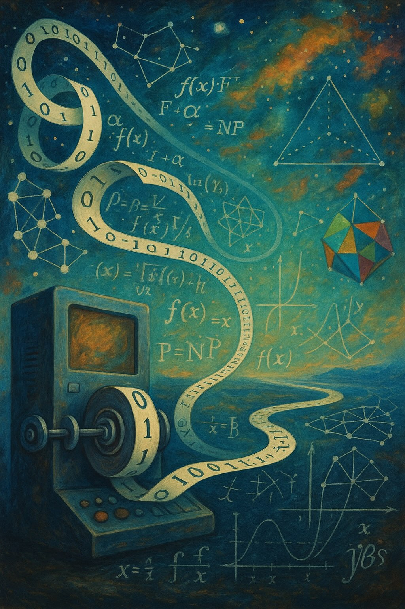

We study a use of Semi-definite programming hierarchies (such as Sum of Squares) to approximate constraint satisfaction problems with 2 variable constraints (2CSPs). These results are part of an influential paper by Barak, Raghavendra, and Steurer: \textit{Rounding Semidefinite Programming Hierarchies via Global Correlation}. The approximation depends on the spectrum of the input constraint graph $G$, and we will prove a deep result relating the threshold rank of $G$ (the number of eigenvalues of the random walk matrix of $G$ that are greater than some threshold) to the complexity of approximating a solution to the CSP defined by $G$.
Overview
Welcome to our reading group exploring Theoretical Computer Science (TCS) in all its breadth. Everyone is invited: students and faculty from any department (and visitors from outside UIUC are welcome, too). TCS has deep ties to Math, ECE, Physics, and many other areas. If you would like to give a talk, please let the organizers know. If you are a student interested in helping lead and organize the group, please reach out to Fernando.
Tentative Format
The format is flexible. For instance, we can have usual ~1 hour talks, or, ideally, more intense (and fun ;) ~2-3 hours gatherings depending on the speaker interests. A suggestion for longer talks is the following.- First Part (~1 hour): general presentation about the work with context, motivation, and overview of technical results possibly with some simpler proofs.
- Break (~30 minutes): recharge and socialize.
- Second Part (~1 hour + x minutes): present (some of) the technical part and proofs in more detail.
- Final Part (~30- x minutes): more questions, free speculations, and socialization.
Tentative Schedule
A tentative schedule with speakers is given below. Please note that this is under construction.
LDCs (locally decodable codes) are codes where any symbol of the message can be recovered with high probability by querying only a few positions of a corrupted codeword. I will describe the best-known construction of 3-query LDCs using matching vector families. If there is time and interest, I will also discuss the constructions of constant query LDCs via irreducible representations and constant rate sub-linear query LDCs via the expander-based Sipser-Spielman construction.
As algorithmic predictions increasingly influence human decisions, it becomes important to learn an accurate predictor. Calibration requires predicted probabilities to match actual likelihood, offering a finer notion of accuracy. For example, when a predictor predicts that some event will happen with a probability of 0.7, then it should actually happen for 70% of the time. Multicalibration strengthens this by enforcing calibration within every subpopulation, linking it to fairness, agnostic PAC learning, and pseudorandomness.
This talk introduces calibration and its variants (including the expected calibration error (ECE), multicalibration, weighted calibration) and surveys algorithms for learning multicalibrated predictors and their connection to agnostic learning [Hébert-Johnson et al., PMLR’18]. We then discuss computational challenges in the multi-label setting [Gopalan et al., PMLR’22] and relaxations using low-degree weight functions [Gopalan et al., COLT’22; PMLR’24]. Finally, we highlight applications such as human–algorithm collaboration [Collina et al., STOC’25; SODA'26].
Locally Testable Codes (LTCs) are error correcting codes in which one can efficiently test whether a given word is close to the code by randomly checking a small number of bits from the word. These codes are an important tools in many areas, such as program checking and probabilistically checkable proofs. Recently, work by Dinur et al. gave the first explicit construction of LTCs with constant rate, constant distance, and constant locality (number of bits queried), which is a significant result as such codes were not previously known to exist. This talk will give an overview of the construction of these LTCs and the proof that this construction yields good parameters.
Matrix multiplication is one of the most important problems at the center of algebraic complexity theory; it governs the complexity of most problems in linear algebra. In the late 1960s, Strassen set out to prove that no algorithm could beat the trivial matrix multiplication algorithm, but, to his surprise, he showed that one could multiply 2x2 matrices with only 7 multiplications, obtaining a bound on the exponent of matrix multiplication, ω <= 2.81. This revelation inspired computer scientists to study this problem and, in 1987, Coppersmith and Winograd showed ω <= 2.38.
While progress on upper bounds has slowed, there has been recent progress on barriers to techniques used to prove previous results. This talk will give a brief overview of how upper bounds on rank and border rank give fast matrix multiplication algorithms; we will state the Asymptotic Sum Inequality and how Schönhage used it to obtain the upper bound ω <= 2.55.
An edge-colored graph is said to be rainbow if no color appears more than once. Extremal problems involving rainbow objects have been the focus of much research over the last decade, as they capture the essence of a variety of interesting problems across different areas such as coding theory and additive number theory. A particularly intensively studied question due to Keevash, Mubayi, Sudakov and Verstraëte from 2007 asks for the maximum possible average degree of a properly edge-coloured graph on n vertices without a rainbow cycle. Recently, Alon, Bucić, Sauermann, Zakharov, and Zamir established an essentially tight bound of (log(n))^{1+o(1)} for the maximum possible average degree when rainbow cycles are forbidden using the technique of robust sublinear expander.
This talk will give a gentle introduction to robust sublinear expanders and sketch the main ideas behind this result. For pedagogical reasons, we will also present a detailed proof of a weaker result obtained through a similar high-level approach. In addition, we will briefly discuss algorithmic aspects of sublinear expanders. The talk will assume only minimal background in graph theory.
NP-hard problems are (probably) infeasible in the worst case. However, we do not live in a worst case world, and such problems can still be easy on "most" instances, i.e., virtually all instances that arise in practice. To truly capture "real world" computational infeasibility, we must turn to average case hardness. Additionally, for computational hardness to be useful for cryptography, average case hardness is not enough; one needs to be able to sample hard instances along with their solutions.
While there are serious barriers to proving the existence of such hardness, recent breakthroughs in metacomplexity have brought this goal closer than ever before. This talk will give a brief overview of how Kolmogorov complexity offers a path towards bridging the gaps between worst-case hardness, average-case hardness, and cryptographic hardness.
Kolmogorov Complexity is an important notion of randomness in computability theory. Along with the Minimum Circuit Size problem (MCSP), it constitutes Meta-Complexity theory - the study of complexity of computational problems that are themselves about (some measure of) complexity.
We will introduce meta-complexity and discuss the complexity of MCSP and a brief history of attempts to characterize Kolmogorov complexity that culminate in a successful characterization of Statistical Zero Knowledge (SZK) and its non-interactive counterpart NISZK. (We will assume zero knowledge about these classes or Kolmogorov Complexity)
